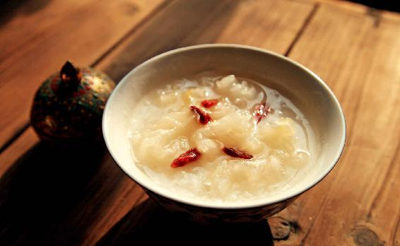

从秋分节气开始，一年一度的吃银耳的黄金一百天就来了，要吃到什么时候呢？一直吃到来年立春之前。
我的这个方法，从2007年开始分享给读者朋友们。那时候节气还没有现在这么受关注，很多人连什么时候是什么节气都不清楚。为了方便大家记住，一开始第一篇文章我就没有写秋分，而是写中秋，因为秋分和中秋总是接踵而至的，所以我就告诉大家从中秋节开始吃银耳羹进补。
十多年过去了，现在大家对于节气很熟悉，节气养生也很普及了。一到秋分，读者朋友们就会互相提醒，又到了我们要多吃银耳羹来补身体的时节了。
很多人感受到了它的好处，不仅热心地向身边亲友推荐，还给我写了好多的留言反馈效果。每年秋冬季，反馈银耳效果的留言真是多到看不完。
的确，在秋冬季的所有补品中，既有显著效果，而又老少咸宜的，第一个就是银耳了。
银耳有一个特别宝贵的地方，就是它可以入人体的五脏六腑，有各种各样的补益作用，又非常平和。总结起来就是：润而不寒，甘而不腻，补而不滞。
润而不寒是什么意思？银耳是非常滋润的，是滋阴的，但这种滋润是凉润，它并不寒，即便是体质虚寒的人，也可以吃它。我们只有在风寒感冒严重的时候，可以稍稍地停一下，平时吃是没有问题的。
甘而不腻是什么意思？银耳属于一种甘味食物，有补脾的功效，但是它又不会让我们腻住，就是它不会补得让我们的胃口不好。黄芪也是一种甘味的食物，但黄芪吃得过多的话，就会让人胃口不好，吃不下东西，这就是有点偏腻了。
因此，银耳可以说是“久服无弊”，也就是补而不滞，长期吃也不会有不良反应。
一家人不论男女老幼，都可以常常吃。一年中不论春夏秋冬，都可以吃。
为什么我说从秋分到立春是吃银耳的黄金时间呢？
不是因为银耳只适合这段时间吃，而是因为这段时间我们的身体最需要银耳来滋补。
一年中，我们要吃的各种健康饮食也不少。如果您在其他时节感觉吃不过来，银耳可以少吃点，让位于其他当季更需要的食方。而到了从秋分到立春这一百多天，银耳就是我们每天要吃的滋补食方中的第一位了。
有些年份秋燥来得早，吃银耳的时间还可以再提前一些。如果您在秋分之前感到干燥比较明显，就可以开始吃银耳了。因为每一年的气候都有其特殊性，所以在白露节气时就可以开始准备银耳了。
一到秋天，不少人会感觉到皮肤干燥，也会觉得更敏感、更脆弱了，有的朋友可能会很容易被太阳晒伤、晒黑，有的人则可能会过敏。
为了预防这些症状发生，就要提前给皮肤补好水、增加保护层，最好在秋分之前，我们就开始吃银耳。
银耳可以很好地滋润、保护皮肤，它的营养能够达到皮肤，让皮肤变得更健康。同时，由于它给皮肤提供了很好的营养，会使皮肤的代谢功能得到增强。
银耳之所以能养颜，不仅因为它能滋润皮肤，给皮肤保湿，还因为它能给皮肤美白、淡斑。
我喜欢把银耳称为平民的燕窝，因为它和燕窝比较相似，都有使人皮肤滋润、美白的作用，但比燕窝便宜很多。
有些朋友把银耳的功效理解得比较窄，就认为银耳是养颜的。养颜固然是银耳一个非常突出的功效，但是从银耳对我们身体健康的保护角度来说，养颜可能是其中最不重要的一个了。银耳其实还有更重要的功效，那就是给身体补虚，调理我们的慢性病。
很多朋友有一个顾虑：自己身体里的湿气还没有完全排除干净的情况下，能吃银耳吗？
如果觉得自己的身体有燥又有湿，不知如何是好的时候，那您可以吃银耳莲子羹。
之前讲过，到了秋天的时候，身体容易出现上燥下湿的现象——上半身很干燥，但是下半身却积聚了很多湿气。
有的朋友分不清楚什么叫作上燥下湿。其实，有一个很简单的检验方法：如果您觉得自己的皮肤或者鼻腔、口腔很干燥，或者是觉得自己的眼睛很干燥，双目干涩，甚至有的朋友流鼻血，等等，这些症状大多发生在人体的头面部位，这就叫作上燥。
上燥也发生在我们的呼吸道，如果您觉得嗓子经常干哑，或者虽然有一点痰，但却非常黏，颜色很深，有点发黑，而且就是早上起来有那么一点点，这种情况除了下焦有湿气，也跟上燥有关系。
那什么是下湿呢？在人体的下焦——肾系统和膀胱系统，也就是生殖系统和泌尿系统有湿气，这就是下湿。
下湿的症状有很多，比如，女性的白带比较多、宫寒不孕、小腹经常有一种痛感，男性患有前列腺炎，这些都是下焦有湿气的表现。还有大腿比较粗胖，而且很难减下去，这种人在下焦也有湿气。
下焦有湿气，也不只表现在下焦这一个地方，它可能是全身的。比如，经常过敏有湿疹、早上起来嗓子眼里总有一小口痰、下巴周围长痘痘的朋友，下焦都有湿气。
如果您想特别简单地判断自己是否上燥下湿，那就看自己的下湿是否表现为大便的问题：如果常年大便不成形，还有一点粘马桶，那么身体就有下湿。
不论是否便秘，只要大便粘马桶，都是有湿气的表现。特别是秋天，通常很多朋友的大便不成形，好像只是脾虚，事实上，它是夹杂有湿气的。
脾虚、便溏、大便黏腻有湿气的人，进补可以吃一些莲子。
如果上燥下湿，可以吃银耳莲子羹。
当您用银耳莲子羹这个食方的时候，要注意莲子的选择。
如果您觉得自己的湿气偏重，就要选择带皮、带心的莲子，也就是带心的红莲。如果您的湿气不重，觉得自己脾虚的现象比较明显，那您可以选择去皮、去心的莲子，也就是无心的白莲。
大便长期不成形的人，可以吃去心莲子。便秘的人可以吃带心莲子。莲子带心一起吃，可以使我们的心肾相交，对睡眠比较好。
银耳莲子羹是古人经常用的一个经典食方。如果您不知道自己吃银耳的时候应该搭配什么好，那么就不妨尝试一下这个搭配，还可以再加上一些枸杞。这种吃法基本上什么人都适合。
如果您想给自己的身体补水、润燥，又担心体内可能有残余湿气的话，银耳莲子羹就是一个比较保险的食方，你不妨尝试一下。
从现在开始，整个秋冬季，全家人都可以每天用银耳来进补。
实际上，秋冬季的时间那么长，人的身体难免会发生感冒、咳嗽等各种状况，一家人有老有小，哪些人适合多吃银耳，哪些情况下可以暂时不吃银耳呢？银耳是一种非常平和的补品，基本上男女老幼可以长期吃，是一种多吃也不容易产生不良反应的食材。如果您的身体没有很特殊的情况，那您可以放心地吃银耳。
哪些情况下我们可以多吃银耳呢？
以下几种身体状况都是适合多吃银耳的，如果您自查符合其中的任何一条，那么您都可以长年吃银耳。
如果这几种身体状况您都没有或者不明显，那么，您只需在整个秋冬季每天用银耳来进补就可以了。
皮肤特别干燥、嘴唇干燥脱皮，这种情况下您可以多吃银耳。
有些朋友一到秋冬季就不断地涂润唇膏，不然的话嘴唇就容易干燥干裂。这些朋友可以每天坚持吃银耳，大约一个月时间，嘴唇会变得滋润很多，就不需要涂润唇膏了。
如果只是干咳、长期地咳，或者有一点痰，带一点血丝，这些咳嗽是适合在饮食中加入银耳来调理的。
有些朋友一到秋冬换季的时候就容易咳嗽，建议您最好提前吃银耳，可以起到一个预防的作用。
哪种咳嗽我们暂时不能吃银耳呢？就是风寒感冒引起的咳嗽，如果痰特别多，又很清稀，这种情况下您就暂停几天，等风寒感冒好转以后就可以吃了。
我以前也反复强调过，风寒感冒是可能转化为风热感冒的，所以当我们咳嗽的时候，它也是会转化的。有些朋友一咳嗽起来，由于调理不得法，咳嗽的时间非常长，一开始可能是寒咳，咳着咳着可能就变成以炎症为主的热咳了。
当您在咳嗽初期的时候，如果发现是寒咳，您就先祛风寒，用葱姜陈皮水及时调理，小孩子用蒜水及时调理，之后咳嗽就会好转。如果调理不得法，还一直咳，咳到后来就会变成长期的咳嗽，嗓子总是干痒，总想咳，痰又不太多，这时候您可以适当地吃一点银耳润肺。
如果您的胃病已经发展成为慢性胃炎，并且经常有烧心（胃灼热）的感觉，口气还特别重，那您可以经常用银耳来养养胃，因为银耳是滋养胃阴的。
牙龈经常出血，其实跟脾虚很有关系。银耳是补脾的，主要是益气和血，对脾虚造成的各种出血症有调理的作用，比如，牙龈出血、咯血、小孩子经常性地流鼻血、女性月经过多、有痔疮的朋友出现大便带血，等等。
如果您经常有这些症状，那您是可以四季都吃银耳的。
特别要提醒一下牙龈经常出血的朋友，长期牙龈出血容易导致牙龈萎缩，继而容易牙齿脱落。因此，当您发现自己刷牙时牙龈经常出血，建议您长年服用银耳来调理。

银耳能入大肠经，是润肠化燥的，对于大便干燥秘结的朋友非常有帮助。现在很多老年人都有大便干燥秘结的毛病，很痛苦，但老年人又不适合用清热下火的通便药物。
我建议老年人每天要喝一点银耳羹来调理肠道，因为老年人的便秘，更多是因为肠道缺乏润滑造成的，而银耳可以滋阴润燥。
我建议中老年人一定要多吃银耳。因为银耳是补心肾的，它既能补肾，又能强心，对于老年人经常会出现的心悸、失眠是很有帮助的。
如果您在秋冬季睡眠不太好，特别是睡到半夜会醒过来，而且感觉到一阵发热，好像还出了一点汗，这是有一点阴虚了，那就更要多吃银耳来补阴。